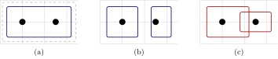
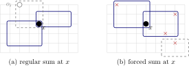

IThe theorem and the architecture of its proof 4
1The result 4
1.1Proof status 6
1.2Earlier work and the method 6
1.3Reading guide 8
1.4Notation and conventions 8
2Definitions 9
2.1The gauge group and the Wilson measure 9
2.2Wilson families and their correlations 10
2.3Local fields 12
2.4Euclidean properties 14
2.5Field spaces and phases 15
2.6Wightman theories 15
2.7The trace and product statements 16
3The main theorem 17
4Strategy of the proof 19
4.1Why the ultraviolet induction closes 19
4.2Tuning, uniqueness and convergence 23
4.3Rotations 24
4.4Phases and reconstruction 25
4.5The trace 25
5The renormalization group 26
5.1Scales and the block map 26
5.2The density and its norms 28
5.3The inductive step 31
5.4Multiscale trajectories 32
5.5Local fields under blocking 34
5.6Uniform bounds and the fixed-volume limit 35
6The continuum limit, stress, phases, trace and products 36
6.1The volume limit and the field calculus 36
6.2Stress and rotations 38
6.3Phases and reconstruction 41
6.4Trace and products 43
7Deduction of the main theorem 46
8A weaker existence statement 47
8.1Hierarchy data and the conditions Q0–Q6 48
8.2A generalized free-field example 49
8.3Conventions for hierarchy data 51
8.4An averaged countertest 52
9Constants and order of choice 52
Index of notation 54
IIProofs 57
10Local polynomial fields 57
10.1Labels, test holonomies and the Taylor map 58
10.2Taylor-normalized sections 59
10.3Small-field bounds 61
10.4Auxiliary equation sections 62
10.5Example: the curvature square 66
11Gauges and block integration 67
11.1The block kernel 68
11.2Free quadratic forms 72
11.3The stationary background and Gaussian coordinates 79
11.4Inverse, vertex and Ward estimates 85
11.5The local large-field energy 93
11.6Sector Gaussian integration 100
12Path actions and the one-loop coupling 112
12.1Curvature coordinates and the path action 112
12.2Fourth-order matching 114
12.3The determinant comparison 119
12.4The one-loop coefficient 122
13Activities and the inductive step 129
13.1The local expansion 132
13.2Local quadratic subtraction 150
13.3Forced fusion, activity bounds and the reset 152
13.4Continuity at fixed volume 158
13.5The Wilson start 159
13.6The specified recursion 161
13.7Weighted analytic estimates 163
14Trajectories, marked fields and ultraviolet convergence 177
14.1Trajectories and tuning 178
14.2Marked fields and volume-uniform estimates 185
14.2.1One marked insertion 185
14.2.2Chessboard seminorms and replicated sources 192
14.2.3Negligible errors and local matching 200
14.2.4Equation identities and coefficient corrections 204
14.2.5Comparison with free fields 207
14.2.6Bounds for lattice differences 217
14.2.7Bounded approximations 220
14.3Full ultraviolet convergence 224
15Infinite volume and field calculus 231
15.1Volume limits 231
15.2Separated cells and negligible errors 233
15.3Quotient fields 234
15.4Euclidean properties 237
15.5Repeated reflected words 238
16Free fields, Ward identities and rotations 239
16.1Free fields 240
16.2Lattice inputs 247
16.3Free comparison and the conserved line 254
16.4Coordinate reflection spaces and spectral estimates 257
16.5Ward identities and rotations 263
17Phases and reconstruction 270
17.1Compression and phases 270
17.2Reconstruction 276
18The trace law and non-free comparisons 284
18.1Trace and spectrum 284
18.2Precise non-free comparisons 301
19Products and contact subtractions 305
19.1Products and nested clusters 310
19.2Contact subtractions 323
References 332
This section defines the block map, the coordinates of the effective densities and their norms, and states the inductive step, the multiscale theorem and the two ultraviolet results built on them. Fix \(\textsf{b} > 0\). Throughout we use the common choices of Sections 10–14, made once for the group realization and the penalty in the order of Section 9; constants may depend on these choices, and further dependence is stated where it occurs.
With odd ratios \(\ell_m \geqslant 3\), set
| \(\displaystyle D_0 = 1, \qquad D_{m + 1} = \ell_m D_m, \qquad a_m = D_m^{- 1}, \qquad s_m = \log D_m \hspace{0.17em} .\) | (5.1) |
Level \(m\) has spacing \(a_m\), and blocking passes from level \(m + 1\) to level \(m\); the level-\(m\) torus has side \(L_p D_m\) in lattice units and \(L_p\) in physical units. The cutoff sequence of the family is \(D_N\). Each level carries the stage \(J_m\) of Section 4.1. The endpoint coupling \(\bar{\beta} > 1\) is chosen large (item 7 of Table 3), and
The reference coupling \(\hat{\beta}_m\) follows the leading running slope; \(t_m\) separates small from large plaquette fields; \(B_m\) is the radius of the support weights; and \(\epsilon_m^{\text{reg}}\), \(\epsilon_m^{\text{for}}\) are the bounds kept by the induction for the regular and forced activity sums (Section 4.1 explains these sizes). They depend on the reference coupling, so they stay fixed as the actual coupling varies in the band \(\mathfrak{B}_m = [\hat{\beta}_m / 2, 2 \hat{\beta}_m]\). The physical periods \(L_p\) are strictly increasing multiples of four, every positive integer divides \(L_p\) for infinitely many \(p\), and \(L_p D_m \geqslant 100 (B_m + 1)\). At stage \(j\), \(\mathfrak{q}_j\) is the derivative order, \(\varpi_j\) the spatial power, \(\sigma_j\) the support exponent and \(\omega_j^{\text{RG}} \geqslant 0\) the coupling drift bound (Section 9).
At a step \(m + 1 \to m\), the fine links \(U\) and coarse links \(V\) live on \(\Lambda_{L_p D_{m + 1}}\) and \(\Lambda_{L_p D_m}\); put \(j = J_{m + 1}\), \(\ell = \ell_m\) and \(\mathbb{B}_R = \{- R, \ldots, R\}^4\). Fine transports between two coarse endpoints are compared after expressing them in the same frames. A frame is a gauge transformation \(h_{y, z} \in G\) at each fine site \(\ell y + z\) of the patch of radius \((j + 3) \ell\) around \(\ell y\), built from parallel transports in the patch (Definitions 11.1–11.3). For a coarse edge \(e = (y, a)\) the framed straight connector is
| \(\displaystyle Y_{e, z} = h_{y, z} \left( \prod_{r = 0}^{\ell - 1} U (\ell y + z + re_a, a) \right) h_{y + e_a, z}^{- 1} \hspace{0.17em},\) | (5.4) |
the fine transport from \(\ell y + z\) to \(\ell (y + e_a) + z\) in the frames at its ends. With \(\text{Unif}\) the uniform probability on a box and \(\ast j\) the \(j\)-fold convolution, the averaging weights and the predictor are
The second form holds because \(\text{pr} (Yu^{- 1}) = (2 n_G)^{- 1} \|Y - u\|_{\text{F}}^2\) for unitary \(Y, u\): the predictor is the point of \(G\) nearest to the weighted average of the connectors, an average of group variables taken through the ambient matrices. On a good patch the connectors lie near one another, and this branch, on which the minimizer is unique, is used when the minimum lies below a fixed cutoff. Where the frame test or the predictor test fails, the kernel chooses at random, an axial frame from a finite list or a single connector \(Y_{e, z}\) with probability \(w^{\text{av}}_z\); these branches complete the kernel on the remaining configurations (Section 11 gives the decision rules, summarized in Table 4 and Figure 11). A tag \(\alpha_{\text{tag}}\) records these discrete choices and nothing else: for each coarse site a frame label \((z, o)\), an offset \(z \in \mathbb{B}_{(j + 3) \ell}\) and an order \(o\) of the four axes, and for each coarse edge an offset \(z \in \mathbb{B}_{(j + 3) \ell}\) selecting a connector; on the minimizing branches the label is drawn uniformly and does not affect the kernel. Tags are drawn with probabilities
| \(\displaystyle \lambda^{\text{tag}} (U, \alpha_{\text{tag}}) \geqslant 0, \qquad \sum_{\alpha_{\text{tag}}} \lambda^{\text{tag}} (U, \alpha_{\text{tag}}) = 1 \hspace{0.17em} .\) | (5.6) |
Given \(U\) and the tag, the coarse links are independent, each concentrated within about \((\textsf{b} \beta)^{- 1 / 2}\) of its predictor, with the normalized density \(q_{\gamma} (u) = e^{- \gamma \text{pr} (u)} / \int_G e^{- \gamma \text{pr}} \hspace{0.17em} dh\); the block penalty plays the role of the smearing parameter of soft block-spin transformations.
Definition
with probability Haar measures on both link sets.
For fixed \(U\) and tag, right invariance of Haar measure makes each coarse factor integrate to one; summing the tag masses gives \(\int k^{(m)}_{\beta} (U, V) \hspace{0.17em} dV = 1\). Hence, for integrable \(f\),
| \(\displaystyle \int (\mathcal{B}^{(m)}_{\beta} f) (V) \hspace{0.17em} dV = \int f (U) \hspace{0.17em} dU \hspace{0.17em} :\) | (5.7) |
the map integrates one scale exactly and keeps the partition integral. Branches, measurability and symmetries of the kernel are proved in Section 11.
Probabilistically, a block step is the following experiment. Let \(U\) have law \(f (U) \hspace{0.17em} dU / \int f\) for an integrable \(f \geqslant 0\) with \(\int f > 0\); draw a tag with probabilities \(\lambda^{\text{tag}} (U, \cdot)\); and put \(V_e = R_e Q_e^{\text{pred}} (U, \alpha_{\text{tag}})\), where the \(R_e\) have density \(q_{\textsf{b} \beta}\) and are independent of each other and of \((U, \alpha_{\text{tag}})\). The pair \((U, V)\) then has law \(f (U) k^{(m)}_{\beta} (U, V) \hspace{0.17em} dU \hspace{0.17em} dV / \int f\), and by Fubini the law of \(V\) has density \(\mathcal{B}^{(m)}_{\beta} f / \int f\) with respect to Haar measure. Exactness refers to this identity, which includes every branch of the kernel. It does not mean that the coarse density is again a Wilson density; Section 5.2 gives the coordinates in which it is written.
The density produced by the integrations records four things: the leading curvature action with its running coupling, the field-independent scalar accumulated so far, small local corrections on small-field supports, and the contributions of large-field regions. At level \(m\) write \(\Lambda = \Lambda_{L_p D_m}\). The flagged sites \(\text{Flag}_m (U)\), or large-field sites, are the sites incident to a plaquette whose chord exceeds \(t_m\); a support is healthy, or small-field in the sense of Bałaban, if it contains none. Flags are gauge invariant, because plaquette chords are: the transform of the identity configuration in Section 2.1 has no flagged site, however far its links are from the identity. A regular activity \(E_i^{\text{reg}}\) is a Borel real gauge-invariant function, local on its support \(X_i\), anchored at \(o_i \in X_i\) and vanishing at the flat configuration; it is used only on healthy supports. A forced activity \(K_i^{\text{for}}\), one of the large-field polymer activities, is local on its support \(Y_i\) and carries a nonempty inventory \(I_i \subset Y_i\) of flagged sites; it vanishes off its eligibility event
The first condition fixes exactly which sites of \(Y_i\) are flagged. The extra event is a fixed Borel gauge-invariant test supplied with the activity, which reads only links with both endpoints in \(Y_i\) and the flags in \(Y_i\); it distinguishes local alternatives with the same support and inventory. The activity families are countable.
The path action carries the kinetic coefficient and the quadratic corrections generated by integration. At level \(m\) abbreviate the clipping constants and relaxation length of item 4 of Table 3,
where \(\gamma_j > 0\) is half a uniform lower bound for the free effective plaquette forms of Lemma 11.5. Distances are periodic maximum-coordinate distances in lattice units: on a torus of side \(n\), \(\text{dist} (x, y) = \min_{z \in n\mathbb{Z}^4} | \tilde{x} - \tilde{y} + z|_{\infty}\) for lifts \(\tilde{x}, \tilde{y} \in \mathbb{Z}^4\). Set
For each plaquette orientation \(\mathfrak{p}= (a, b)\), let
\(\mathcal{F}_{\mathfrak{p}i} (U, x)\) be a curvature
\(\text{proj}_{\mathfrak{g}} (U_{\square} - U_{\square}^{- 1}) / 2\),
with the orthogonal projection for the metric of Definition 2.1,
transported along a specified finite path to \(x\), and put
\(\mathcal{L}_{\mathfrak{p}}^{\text{path}} (U, x) = \sum_i
r_{\mathfrak{p}i}
\mathcal{F}_{\mathfrak{p}i} (U, x)\), a smeared
lattice curvature at \(x\). The action splits the effective kinetic form
into a clipped part, quadratic below \(t_m\) and linear beyond, and the
remaining positive form, written as a sum of squares with one row per
\((x, \mathfrak{p})\); a row is switched off once some plaquette exceeds
its distance-relaxed threshold, that is, when the relaxed threshold
test \(\chi^{\text{rel}}_{m, x}\) of
where \(h^{\ast} U\) transports links by the lattice isometry \(h\). The path coefficients and multilinear expressions are independent of \(p\) (Definitions 12.1–12.2, Lemmas 12.3–12.4); the action is affine in \(\beta\),
where, after the average over \(H_4\), \(\partial_{\beta} P^{\text{path}}_{N, m}\) collects the clipped plaquette terms, the row squares with their switches \(\chi^{\text{rel}}_{m, x}\) and the cubic and quartic terms, and \(P^{\text{path}}_{N, m} (0, \cdot)\) the quadratic terms \(\mathfrak{a}_i^{(2)}\). The clip drops at \(r = t\) from \(c_{\text{dir}} t^2 / 2\) to \(c_{\text{lin}} t^2\). Accordingly the density coordinates are Borel functions; derivatives are taken only on healthy configurations with the masks held fixed, so coupling derivatives never differentiate the flag boundary. The positive linear branch beyond the threshold is what the local large-field energy bound (Lemma 11.12) uses.
For these fixed path actions and thresholds, a representation at level \(m\) is the datum
| \(\displaystyle \rho = (\beta, v_{\text{sc}}, (X_i, o_i, E_i^{\text{reg}})_i, (Y_i, I_i, \mathcal{E}_i^{\text{extra}}, K_i^{\text{for}})_i) \hspace{0.17em},\) | (5.11) |
with scalar normalization per site \(v_{\text{sc}}\) (a constant in the effective density, not the vacuum vector of Section 6.3) and running coupling \(\beta (\rho) = \beta\). The running coupling is thus a coordinate fixed by the choice of path action: the coefficient of the fixed function \(\partial_{\beta} P^{\text{path}}_{N, m}\), whose quadratic part is normalized so that \(\beta\) is the coefficient of the squared curvature at zero momentum at every level, while the quadratic terms \(\mathfrak{a}_i^{(2)}\) carry no curvature-square term (Lemma 12.4). It is not read off from the whole density, which also contains \(v_{\text{sc}}\) and the activities. Let \(\mathfrak{F}_m (U)\) be the set of finite \(\mathfrak{a} \subset \mathbb{N}\) such that the supports \(Y_i\), \(i \in \mathfrak{a}\), are pairwise disjoint and \(\bigcup_{i \in \mathfrak{a}} I_i = \text{Flag}_m (U)\): the exact covers of the flagged sites.
Definition
If there are no flagged sites, \(\mathfrak{F}_m (U) = \{\varnothing\}\) and the forced sum is one. Otherwise every flagged site lies in exactly one selected support, but the sum runs over all exact covers: one support may carry two flags in one term while two disjoint supports carry one flag each in another (Figure 7). The local regularity of the activities and the restrictions on forced terms are Definitions 13.1–13.2.
 |
Figure 7. Exact covers of two flagged sites (dots). (a) One support carries both flags; the dashed line marks the larger region its eligibility test inspects. (b) Two disjoint supports carry one flag each. Both selections occur in the sum of Definition 5.2, which does not choose a canonical cover. (c) Overlapping supports are not a cover. |
For a link \(e\) let \(e^-\) be its initial site. The left derivative \(D^L_{\dot{\mathcal{A}}}\) differentiates the increments \(U_e \mapsto e^{t \dot{\mathcal{A}}_e} U_e\), with \(\dot{\mathcal{A}}_e \in \mathfrak{g}\) normed by Definition 2.1.
Definition
over configurations healthy on \(X_i\) and directions with \(| (\dot{\mathcal{A}}_k)_e | \leqslant t_m (1 + \text{dist} (e^-, o_i))^{\varpi_{J_m}}\), \(1 \leqslant k \leqslant q\).
The seminorm measures ordered local derivatives in units of the permitted field size. For a support \(X\), let \(\text{cov}_{B_m} (X)\) be the least number of radius-\(B_m\) lattice balls with connected union covering \(X\); the exponential weight below penalizes supports that need many such balls.
Definition
The two sums are formed differently (Figure 8). The regular sum at \(x\) counts the activities anchored at \(x\), whatever their supports, so each regular activity is counted once, at the site from which its derivative directions are weighted (Definition 5.3). The forced sum at \(x\) counts every forced activity whose support contains \(x\), so the weight \(e^{\sigma_{J_m} \text{cov}_{B_m} (Y_i)}\) charges a large support at each of its sites; if \(x\) is flagged, every activity that covers \(x\) in a term of Definition 5.2 is counted there. Section 13 converts anchored bounds into containing-site bounds where needed, at the cost of the number of possible anchors of a support.
 |
Figure 8. The weighted sums of Definition 5.4 at a site \(x\). (a) The regular sum counts the activities anchored at \(x\) (solid supports), whatever their extent; the dashed support contains \(x\) but is anchored at \(o_i \ne x\) and is counted at \(o_i\). (b) The forced sum counts every activity whose support contains \(x\) (solid), whatever its inventory (crosses); overlapping supports both count, since the sum runs over activities, not covers. The dashed support does not contain \(x\). |
The induction keeps the bounds
| \(\displaystyle \mathcal{E}_m \leqslant \epsilon_m^{\text{reg}}, \qquad \mathcal{K}_m \leqslant \epsilon_m^{\text{for}} \hspace{0.17em} .\) | (5.12) |
These numerical bounds do not by themselves define the classes on which the step acts. The Wilson start is the continuous curve
with scalar normalization zero (Lemma 13.16). The
admissible classes consist of everything reachable from it. Let
\(\mathcal{I}_{N, p} = \{\rho^{\text{W}}_{\beta} : \beta \in
\mathfrak{B}_N \}\) and \(\mathcal{A}_{N, N, p} =\mathcal{I}_{N, p}\).
For \(m < N\), a representation at level \(m\) belongs to
\(\mathcal{A}_{N, m, p}\) if it is obtained from some \(\rho' \in
\mathcal{A}_{N, m + 1, p}\) with coupling in \(\mathfrak{B}_{m + 1}\) by
one block step of Section 13: its path is
\(P^{\text{path}}_{N, m}\), its activities are produced by local
subtraction, path replacement and fusion, its coupling is that of
\(\rho'\) plus the one-loop coefficient \(\alpha_{N, m}\) of Lemma 12.9 and a correction bounded by the first inequality of
Exact integration removes one scale. Extracting its marginal curvature-square term into the coupling leaves a bounded drift error and returns a density in the next admissible class.
Theorem
Idea of the proof (Sections 11–13; the proof follows Lemma 13.17).
The density identity is exact because the output coordinates rewrite
the block-integrated density on every configuration (Lemma 13.13);
by
On small fields, gauge fixing in a rooted block-tree gauge and the stationary background turn the local integral into a Gaussian integral with its determinant and Haar-coordinate factors; the large-field lower bound (Lemma 11.12) supplies suppression of the forced terms.
Classical fourth-order matching fixes the local terms, and the background curvature-square coefficient of the one-loop action, assembled from the inherited quadratic loop term, the fluctuation determinant and the Haar Jacobian, gives the change \(- \kappa_G \log \ell_m\) up to a stage-bounded error (Lemma 12.9).
The local expansion, the contraction of inherited terms and the five-torus localization (Lemma 4.1) give the regular bound; forced fusion gives the forced bound; the scalar coupling reset absorbs the residual kinetic coefficient (Lemma 13.14).
The bound \(\omega_j^{\text{RG}}\) depends only on the stage, not on \(N, p\), the interval or the curve. Since \(\hat{\beta}_m = \hat{\beta}_{m + 1} - \kappa_G \log \ell_m\), a step changes \(\beta - \hat{\beta}\) by \(e_u\) only.
A trajectory is a tuple \(\rho_{N, p, m} \in \mathcal{A}_{N, m, p}\), \(0 \leqslant m \leqslant N\), with \(\rho_{N, p, N} \in \mathcal{I}_{N, p}\) and \((\rho_{N, p, m}, \rho_{N, p, m + 1}) \in \mathcal{R}_{N, m, p}\) for \(m < N\); write \(\beta_{N, p, m} = \beta (\rho_{N, p, m})\). The bare coupling is selected by shooting. Put \(\mathfrak{T}_m = [\bar{\beta} + \tfrac{\kappa_G}{2} s_m, \bar{\beta} + 2 \kappa_G s_m] \subset \mathfrak{B}_m\), so that \(\mathfrak{T}_0 = \{ \bar{\beta} \}\). Start with the Wilson curve on \(\mathfrak{T}_N\). Suppose a closed parameter interval has level-\((m + 1)\) couplings in \(\mathfrak{T}_{m + 1}\), taking its end values at its endpoints. Since \(s_{m + 1} = s_m + \log \ell_m\) and \(|e_u | \leqslant \omega^{\text{RG}}_{J_{m + 1}} \leqslant \tfrac{\kappa_G}{4} \log \ell_m\) (item 5 of Table 3), the output couplings at the two endpoints satisfy
The intermediate value theorem gives a closed subinterval whose couplings lie in \(\mathfrak{T}_m\) and take its end values at its endpoints. After \(N\) steps the level-zero coupling is \(\bar{\beta}\). The couplings are chosen this way for all \(N, p\) before any sequence of volume indices is prescribed. Trajectories for different cutoffs thus share the coupling \(\bar{\beta}\) at level zero; their scalar normalizations and activities need not agree (Figure 9), and Proposition 5.7 below compares them at a fixed level as the cutoff grows.
Figure 9. Trajectories for two cutoffs \(N < N'\) at one volume, from the Wilson start at the cutoff (left) to level zero (right); each arrow is a block step, and levels are aligned vertically. Both reach the coupling \(\bar{\beta}\) at level zero; their scalar normalizations and activities need not agree. At a fixed level \(m\) (dashed), Proposition 5.7 states convergence of the couplings and activities as the cutoff tends to infinity, subject to cutoff continuity in the activity norms and convergence of the path drift. |
Theorem
For every \(\varepsilon > 0\), some \(m_0 (\varepsilon)\) satisfies
The proof is the shooting argument above (Section 14.1,
Lemmas 14.2–14.3). Fix these
trajectories for all later constructions. The drift bound of Theorem 5.5 holds on every adjacent pair, and all their integrals
equal \(Z_{L_p D_N, \beta_{N, p}}\) by
| \(\displaystyle | \beta_{N, p, m} - \hat{\beta}_m | \leqslant \sum_{i = 0}^{m - 1} \omega_{J_{i + 1}}^{\text{RG}} \hspace{0.17em} .\) | (5.14) |
Item 5 of Table 3 bounds the sum by \((\kappa_G / 4) s_m\), which also keeps the couplings in \(\mathfrak{B}_m\). Its stronger bound \(\omega_{J_{i + 1}}^{\text{RG}} \leqslant J_{i + 1}^{- 2} \log \ell_i\) makes the sum \(o (s_m)\): split it at a fixed level and bound the tail by \(\sup_{i \geqslant i_0} J_{i + 1}^{- 2}\) times \(s_m\). Since \(J_i \to \infty\) and \(s_m \to \infty\), the finite initial sum and \(\bar{\beta}\) disappear after division by \(s_m\), uniformly in \(N \geqslant m\) and \(p\). As \(\omega_j^{\text{RG}} \geqslant 1\), the same bound forces \(\log \ell_m \geqslant J_{m + 1}^2 \to \infty\): the block ratios must grow, and the level choices also give \(\log \ell_m / s_m \to 0\). The step construction of Theorem 5.5 is fixed once on whole continuous curves (Lemma 13.17); the trajectories it produces from \(\rho^{\text{W}}_{\beta}\), and their restrictions, form the specified recursion, to which the trajectories of Theorem 5.6 belong. Different cutoffs are compared through the following limit.
Proposition
Idea of the proof (Lemmas 13.22 and 13.25). The truncated-coordinate comparison and uniqueness argument require cutoff continuity in the full activity norms and convergence of the path drift; those inputs remain open. The argument uses geometric truncation, not compactness of a ball in an infinite-dimensional space. The running-coupling coordinates lie in fixed compact intervals, so a diagonal argument gives subsequential limits. At a fixed higher level \(k\), replace the activity coordinate by zero and run the same maps down to level \(m\): the error is at most \((8 g_{\ast})^{k - m}\) with \(g_{\ast} = 1 / 128\), uniformly in the cutoff, while the truncated coordinates converge by the cutoff compatibility of finitely many step maps (Lemma 13.22). Letting \(k \to \infty\) gives the activity limits. Two limits have the same endpoint \(\bar{\beta}\), and their distance \(\mathfrak{d}_{\infty}\) satisfies \(\mathfrak{d}_{\infty} \leqslant 8 g_{\ast} \mathfrak{d}_{\infty}\), so they coincide.
Blocking a density that carries one insertion returns a density of the same form: the unmarked density times a local insertion with new coefficients, plus regular remainders with vanishing Taylor coefficients through order \(d\) and forced remainders attached to large fields. The coefficients evolve linearly, and the insertions of Definition 2.8 are normalized by prescribing them at the reference level. Choose the reference level \(m_{\text{ref}} (d)\) with \(J_{m_{\text{ref}} (d)} \geqslant d + 3\) and \(\mathfrak{q}_{J_m} \geqslant d + 1\), \(\varpi_{J_m} \geqslant d\) for \(m \geqslant m_{\text{ref}} (d)\) (Lemma 14.7). Fix \(N \geqslant m_{\text{ref}} (d)\); starting from a fine-cutoff coefficient vector \(\mathbf{v} \in V_d\), the marked density at the origin is initialized and blocked by
For fixed \(N, p, d\), the transfer construction chooses coefficient vectors \(\mathbf{x}_m (\mathbf{v})\) and regular and forced remainders \(R_{m, i}^{\text{reg}} (\mathbf{v})\), \(Q_{m, i}^{\text{for}} (\mathbf{v})\), all linear in \(\mathbf{v}\). Write \(\mathbf{x}_m = x_{m, 0} \boldsymbol{1}+\mathbf{x}_m^{\circ}\) and \(\rho_m = \rho_{N, p, m}\). The regular remainders have supports \(Z_{m, i}\) containing the origin. Their sum and the forced remainder are
with all unmarked quantities taken from \(\rho_m\). The marked density has the exact decomposition
with the stencil \(\Sigma_d\) placed at the origin of the level-\(m\) torus. If \(10 \text{dist} (x, 0) < L_p D_m\) for every \(x \in Z_{m, i}\), the regular remainder \(R_{m, i}^{\text{reg}}\) has zero radial-jet Taylor coefficients through order \(d\); the forced remainders vanish outside their unmarked eligibility events (Lemmas 14.7–14.9). The fixed decomposition selected there gives the terminal map of Definition 2.8, invertible by Lemma 14.7:
The factor \(\ell_m^d = (a_m / a_{m + 1})^d\) uses the degree of the whole space \(V_d\), and the terminal map accounts for the mixing between its weights. The unit identity \(\mathbf{x}_m (a_N^d \boldsymbol{1}) = a_m^d \boldsymbol{1}\), proved with the transfer symmetries (Lemma 14.8), explains why the coefficient of the constant insertion is \(a_{m_{\text{ref}} (d)}^d \boldsymbol{1}\), although \(V_d\) also contains polynomials of lower weight. With Theorem 5.6, these insertions specify one Wilson family; each insertion is continuous, gauge invariant and local on its fixed stencil, and Theorem 5.6 at \(m = N\) gives the volume-uniform slope \(\kappa_G > 0\).
For a finite list \(\boldsymbol{l}\) of pairs \((i, a)\), with \(i\) a slot and \(a\) an axis, the normalized differences and derivatives are
where \(\tau_{i, a}\) shifts slot \(i\) forward by one lattice link. The torus separation of a lattice tuple is \(\min_{i \ne j} \min_{z \in L_p \mathbb{Z}^4} | \hat{y}_i - \hat{y}_j + z|_{\infty}\), with value \(+ \infty\) for \(n \leqslant 1\), and
the last set excludes collisions on a torus of physical side \(L\). The first result bounds lattice correlations and their differences independently of the volume.
Proposition
Idea of the proof (Section 14.2). Choose an
intermediate level whose physical blocks fit below the separation, so
the insertions lie in distinct blocks. By the decomposition
for \(O_i\) localized in distinct blocks and \(\mathcal{G}\) generated by the reflections in the block boundaries; each factor is independent of the volume. The reflected-moment constant is chosen before the intermediate level, and only the cutoff threshold depends on it.
The second result removes the spacing at each fixed volume along the full sequence; Section 4.2 displays the Cauchy argument.
Theorem
Idea of the proof (Lemmas 14.36–14.37). The Cauchy argument of Section 4.2 gives convergence on \(\bigcup_m a_m \mathbb{Z}^4\): the transferred correlations at a fixed level converge, and the stopping error \(2 F_0 e^{- B_m / 64}\), with \(F_0\) independent of \(m\), compares them with the original ones. Proposition 5.8 extends convergence to all separated positions and identifies every derivative, also at moving points crossing the boundary of the chosen period cell. For \(\boldsymbol{l}= \varnothing\) the left side is \(\lim_N C^{\text{lat}}_{N, p} (v ; f)\), so the inner limits of Definition 2.6 exist at every admissible volume; admissibility places the support of \(f\) inside \(\text{NoHit}_{L_p, n}\). The limiting kernel is periodic in each position and smooth away from periodic collisions, including where positions share coordinates. The thresholds may depend on \(p\).